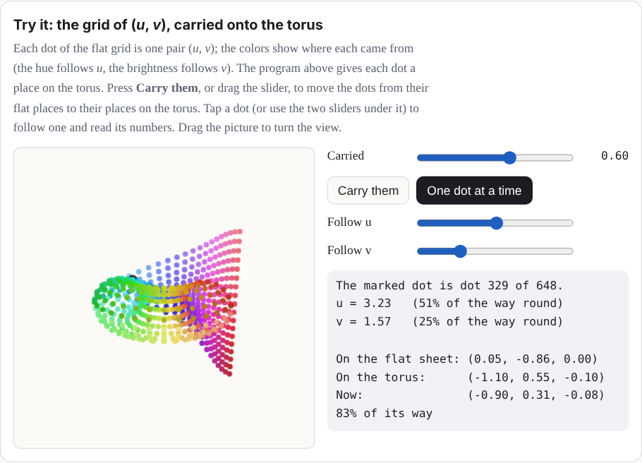
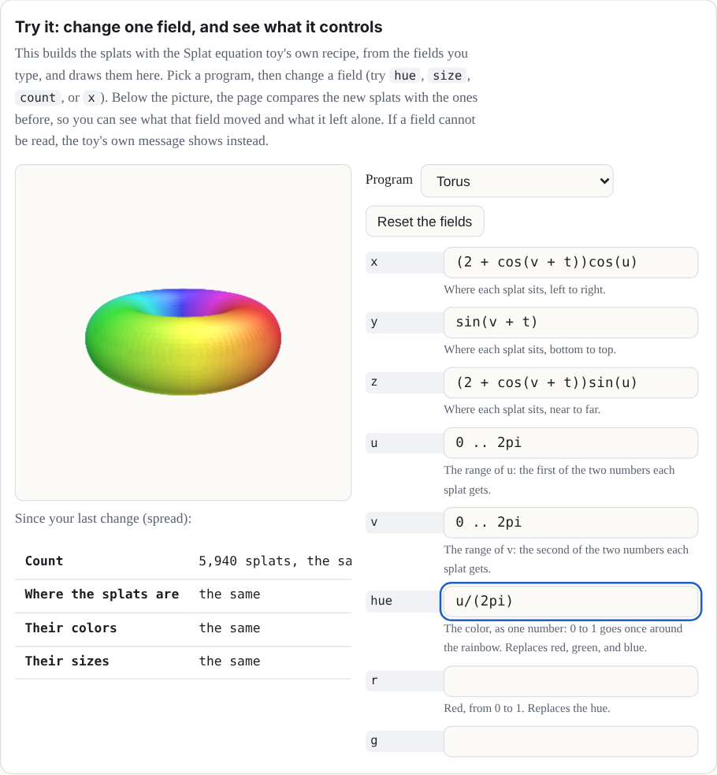
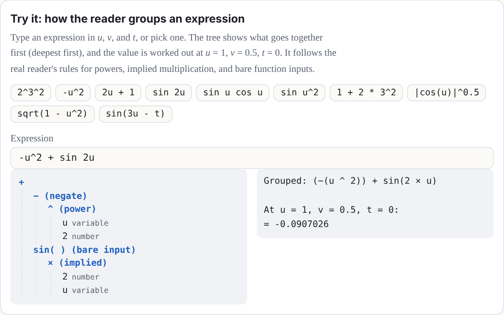
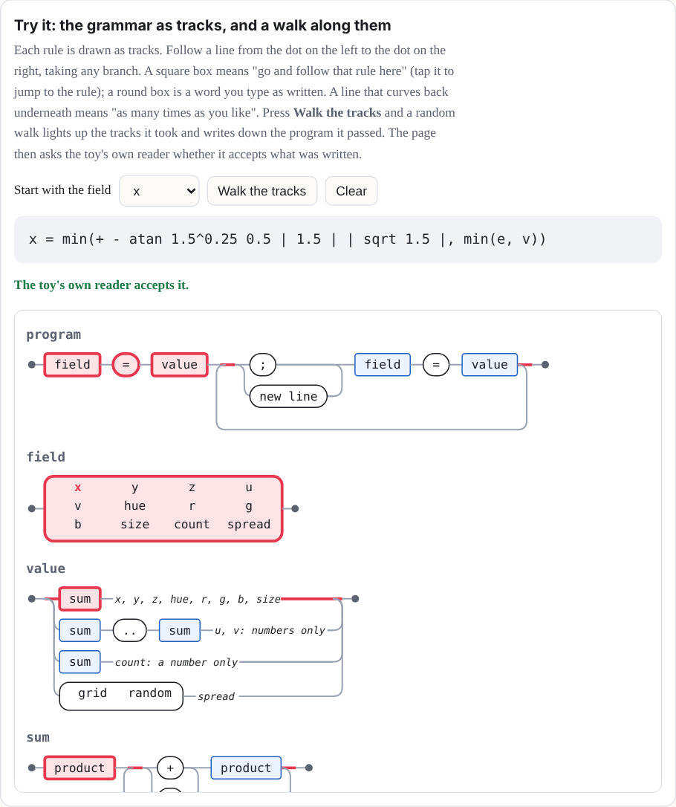
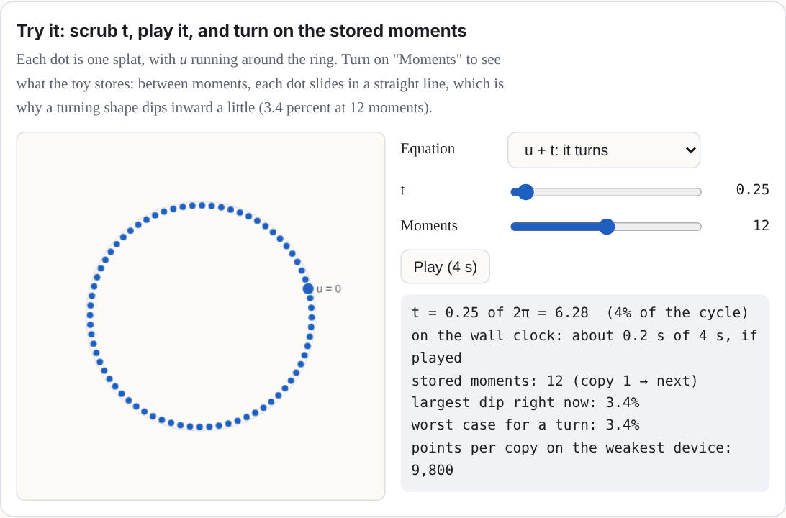

Definitions, derivations, notes, and long tables start folded.
Chapter 3The splat equation language
Recipes are powerful, but they are code, and code from a stranger can do things you did not ask for. The Splat equation toy on the math shelf gives you a smaller language that is only math. You write where every splat goes and what color it is, as equations, and nothing else can happen. That is why a link with your equations in it is safe to share.
Open it with any link in the gallery (Chapter 4). Type in the box under Your own splat program in the Toy tab and press Splat it. The Program list has eight famous shapes to start from.
The idea: every splat gets its own u and v
The toy lays out its splats on a grid of two numbers, u and v, each running over a range you choose. Think of them as the coordinates of a flat sheet of points, laid out before the equations bend it into shape. They are the parameters of a parametric surface [9], not a substitution: nothing is replaced by u or v; each splat simply has its own pair. Your equations turn each splat's (u, v) into a place in space, (x, y, z). If u goes around a circle and v around a smaller circle, the grid wraps into a torus:
x = (2 + cos v)·cos u
y = sin v
z = (2 + cos v)·sin u
u = 0 .. 2pi
v = 0 .. 2piTry it: the grid of (u, v), carried onto the torus
Each dot of the flat grid is one pair (u, v); the colors show where each came from (the hue follows u, the brightness follows v). The program above gives each dot a place on the torus. Press Carry them, or drag the slider, to move the dots from their flat places to their places on the torus. Tap a dot (or use the two sliders under it) to follow one and read its numbers. Drag the picture to turn the view.

The fields
A program is a list of fields, each written name = value. You can type
one field or several, split by ; (a text file can put one on each line). You do
not have to retype everything. A field you leave out keeps what is already showing: if you
type only a new hue, the shape stays and only the color changes.
Show the table: the fields of a program
| Field | What it is | If left out |
|---|---|---|
x, y, z |
Where each splat goes, as equations in u, v, and t. y points up. | Needed |
u |
The range of u, like 0 .. 2pi. |
Needed |
v |
The range of v. | 0 .. 1 |
hue |
Color as a place on the color wheel: 0 is red, 1/6 yellow, 1/3 green, 1/2 cyan, 2/3 blue, 5/6 magenta, and 1 is red again. Any number works; it wraps around every whole turn, so −0.1 gives the same hue as 0.9. | Use r, g, b |
r, g, b |
Color as red, green, and blue, each from 0 to 1. Setting any of them turns hue off; setting hue turns them off. | 0.5 each (gray) |
size |
How big each splat is, in the same units as x, y, and z: about the σ of its bell. It may use u, v, and t. | 0.05 |
count |
How many splats: 100 to 10,000. | 4000 |
spread |
grid spaces the splats evenly; random scatters them at
random over the ranges (a galaxy, a firework).
|
grid |
Try it: change one field, and see what it controls
This builds the splats with the Splat equation toy's own recipe, from the fields you type,
and draws them here. Pick a program, then change a field (try hue,
size, count, or x). Below the picture, the page
compares the new splats with the ones before, so you can see what that field moved and
what it left alone. If a field cannot be read, the toy's own message shows instead.

Why this number? Twelve fields
Our choice, near a limit The toy chose which fields; saved links limit how many a toy can keep.
The toy's program is saved in its link as options, and a link keeps at most 16 option keys per toy. The twelve fields, plus the program picker, the splat style (Solid, Fine, or Dots), the Light and shade switch, and the Moments of t choice, come to 16. A fully filled toy has no spare key left. (The labs switch only hides the toy from the shelf; it does not take the Moments of t definition away, so a link that opens the toy directly still counts all 16.)
If it were chosen differently. More fields means more option keys, so either the limit of 16 rises (a change to how every saved link is read, which must keep old links loading) or fields share a key.
Where it lives: normalizeOptions in src/state.js;
FIELDS in src/packs/splat-equation.js.
Could the equation toy have different fields?
Not tested yet Nothing below is built.
Yes. Each field you add costs one of the 16 option keys a saved link keeps, and the toy already uses all 16, so any new field would need the limit to rise or two fields to share a key. Candidates:
- Opacity, so a splat could be see-through.
- A stretch and a turn for each splat, which would make an oriented, flattened splat instead of a round one.
- Glow, a brightness that does not depend on the lighting.
- A part for each point, so each point could move on its own. This is the costly one: toys are limited to 15 parts.
Flexibility
The reader is forgiving about how you write a program:
-
Alternative names.
colorforhue;red,green, andblueforr,g, andb;splatsforcount;x(u,v,t)forx(and likewisey(u,v,t)andz(u,v,t)); alsocolourandn, which the code accepts. -
Three ways to write a range.
0 .. 2pi,0 to 2pi, or0, 2pi. (Three dots,0 ... 2pi, work like two.) -
Capitals do not matter. Names are not case-sensitive:
Hueishue. -
Notes. Anything after a
#on a line is a note, and the reader skips it.
Expressions
The equations are read by the same small, safe reader as the Graph and Surface plotters. It understands:
- Numbers:
2,0.5,.25. - Variables: u, v, and t. Range ends and the count are numbers only.
- Constants:
pi(or π) ande. -
Operators:
+ − × ÷ ^, written+ - * / ^(and**,·,²,³), with brackets( ),[ ], and{ }(the reader treats all three kinds alike), and|u|for absolute value. -
Functions:
sin cos tan asin acos atan sinh cosh tanh exp log(natural;lntoo),log10 sqrt(or √),abs floor, andminandmaxof two or more values. The inverse trig functions also go byarcsin,arccos, andarctan. -
Shortcuts:
2umeans 2 × u, and3sin(u)and(u + 1)(v − 1)multiply. A function can also skip its brackets when its input is a short product: a run of numbers and names, each with an optional power. The input stops at the next function, at a bracket, or at a plus or minus. Sosin 2uis sin(2u),sin u cos uis sin(u) × cos(u), andsin u^2is sin(u²), not (sin u)². A minus sign cannot start a bare input (writesin(-u)), andminandmaxalways need brackets.
Powers go first, then × and ÷, then + and −, and a power binds to the right:
2^3^2 is 29, and -u^2 is −(u²). Each field
can be up to 240 characters long.
Try it: how the reader groups an expression
Type an expression in u, v, and t, or pick one. The tree shows what goes together first (deepest first), and the value is worked out at u = 1, v = 0.5, t = 0. It follows the real reader's rules for powers, implied multiplication, and bare function inputs. The tree is a simplified picture, though: the toy's own reader also checks the text and tells you under the tree if it would refuse it (a field may be 240 characters, and there are limits on nesting and on how many pieces it can hold).

Why this number? The 240-character limit
Our choice Nothing in the math or the browser needs it.
A program lives in the toy's link, and a link holds up to 12 fields, so a limit keeps links short enough to paste into a message. The longest field of the toy's own programs is 53 characters. The limit was 120 until October 10, 2026, when it was raised to 240, for people who write longer formulas. A link written with the old limit loads the same as before.
If it were chosen differently. The link could carry much more (a text option may be
up to 24,000 characters), so the limit is not what stops longer fields. Two other guards
would be next: expressions nest at most 32 deep and have at most 400 pieces. The cost of
longer fields is longer links and slower builds, because each expression is worked out for
every point at every moment (at the default, 13 positions: the 12 moments and the closing
target). At 240 characters a field can take up to twice as long to build as at 120, and
the longest possible link grows from about 1,400 to about 1,900 characters once compressed
(docs/lab/EQUATION-FIELDS.md). The graph and surface plotters keep 120.
Where it lives: FIELD_MAX in src/packs/splat-equation.js (240);
MAX_LENGTH (120, still the plotters' limit), MAX_DEPTH, and
MAX_NODES in src/equation.js; TEXT_MAX in
src/state.js.
The grammar
Here is the core grammar. Note: words in quotes must be typed exactly as written below.
A grammar is a short list of rules for what counts as a valid program. Its notation follows EBNF, a standard way to write such rules [8]:
-
=means "is made of": the name on the left is built from the pattern on the right. -
|means "or". ("|"in quotes is the absolute-value sign you type.) { }means "repeat what is inside any number of times, including none".[ ]means "optional": what is inside may be there or not.-
Quotes mark text you type exactly. Plain parentheses group choices together. Words with no
quotes, such as
sum, are names of other rules. A note in parentheses at the end of a line is only a comment. - An atom is the smallest piece of an expression that can stand on its own: a number, a name, a function with its input, or something in brackets.
program = field "=" value { ( ";" | new line ) field "=" value }
field = "x" | "y" | "z" | "u" | "v" | "hue" | "r" | "g" | "b"
| "size" | "count" | "spread"
value = sum (x, y, z, hue, r, g, b, size)
| sum ".." sum (u, v: numbers only, and no min or max)
| sum (count: a number only)
| "grid" | "random" (spread)
sum = product { ( "+" | "-" ) product }
product = signed { ( "*" | "/" ) signed | power } (nothing between: 2u)
signed = { "-" | "+" } power
power = atom [ "^" signed ]
atom = number | "u" | "v" | "t" | "pi" | "e"
| function "(" sum ")"
| function bare (sin 2u, sin u cos u, sin u^2)
| ( "min" | "max" ) "(" sum "," sum { "," sum } ")"
| bracket | "|" sum "|" (not directly inside another | |)
bracket = "(" sum ")" | "[" sum "]" | "{" sum "}"
bare = simple { simple } (stops at the next function or bracket)
simple = ( number | "u" | "v" | "t" | "pi" | "e" ) [ "^" signed ]
function = "sin" | "cos" | "tan" | "asin" | "acos" | "atan"
| "arcsin" | "arccos" | "arctan" | "sinh" | "cosh" | "tanh"
| "exp" | "log" | "ln" | "log10" | "sqrt" | "abs" | "floor"
(one input; min and max are above)Try it: the grammar as tracks, and a walk along them
Each rule is drawn as tracks. Follow a line from the dot on the left to the dot on the right, taking any branch. A square box means "go and follow that rule here" (tap it to jump to the rule); a round box is a word you type as written. A line that curves back underneath means "as many times as you like". Press Walk the tracks and a random walk lights up the tracks it took and writes down the program it passed. The page then asks the toy's own reader whether it accepts what was written.

Time
t is time. A tap on the toy plays it from 0 to 2π in about 4 seconds, and the
t slider in the Toy tab holds it anywhere in between. Anything with t in
it moves: u + t turns a shape, sin(t) breathes, and
sin(3u − t) sends a wave around.
Why this number? The two clocks
Our choice Both of them.
There are two clocks. The math clock, t, runs from 0 to 2π, one full circle, so
that sin and cos of it come back exactly to where they started,
and loops are seamless. The wall clock is real time: a play of t lasts about 4
seconds, whatever 0 to 2π means to the math. The speed is eased, so a play starts and ends
still.
If it were chosen differently. A different range for t would change what
a loop looks like (a range of 1 would make sin(t) stop mid-wave). A different
play time would only change how fast it looks.
Where it lives: PLAY_SECS in src/packs/splat-equation.js.
Behind the scenes, the toy builds your shape at 12 moments, t = 0, π/6, 2π/6, and so on, and each copy slides every splat in a straight line to its place in the next copy (a morph, Chapter 2), so every splat is at its computed place at those 12 moments (up to the packing error described below) and slides in a straight line in between. A shape that turns dips very slightly inward between moments, about 3 percent. (With labs on, a Moments of t choice sets 13, 14, or 15 moments instead; 12 stays the default, so older links build as before.)
Why this number? Twelve moments
Our choice, near a limit Our choice; each moment also costs one of the 15 parts.
Twelve copies of 10,000 points (the most count allows) make 120,000 splats,
the Low tier's largest budget, so even the weakest device can hold the biggest program.
(The kit keeps 2 percent in reserve, so on that device each copy is cut to 9,800 points.)
Each moment is its own part (Chapter 2), and 12 parts plus the body fit in the limit of
15.
If it were chosen differently. More moments make a turning shape rounder, because a
splat slides in a straight line between moments and so dips inward in between. The worst
dip is 1 − cos(π ÷ moments): 3.4 percent at 12 moments, 2.2 percent at 15, and 0.9 percent
at 24. But the points per copy shrink on the weakest device: 9,800 at 12, 7,840 at 15, and
4,900 at 24. And because each moment is a part, 15 is the most without a bigger change.
Color and size step at the moments rather than sliding, so more moments would smooth color
changes too. The moments demo below lets you try every count. The labs choice
Moments of t now offers 12, 13, 14, or 15; the Kit lab measured the worst dip of
the splats at 3.41, 2.91, 2.51, and 2.19 percent (docs/lab/MOMENTS.md).
Where it lives: KNOTS (the default, 12) and MOMENTS (the
choices) in src/packs/splat-equation.js; the points per copy are floor(0.98 ×
budget ÷ moments).
Why is each moment a part, and what else could work?
Not tested yet The alternatives below are ideas, not built.
The toy builds 12 complete copies of the shape, one for each moment of t. It shows one copy at a time and slides each into the next with the morph channel, so each copy needs its own part number, to be shown or hidden on its own. Other ways to do it:
- Store the moments in a keyframe texture and blend them in the shader. This needs no parts and allows more moments, but it is a change to the engine.
- Compile the formulas to a shader, so t is continuous and there are no copies at all. This works because every splat is a pure function of its own (u, v, t), with nothing shared between splats, so the graphics chip could work them all out at once. It is the larger experiment.
- Recompute on the processor every frame. This is too slow at 10,000 or more points, with a fresh sort every frame.
Why this number? Twelve bits
Format limit It follows from how much room each splat has.
What is stored for each splat's moment is the move from its place to its target place (the displacement), as three whole numbers, one per axis, each of 12 bits: 4,096 steps across a range of ±2 toy units. These are real binary digits, not a figure of speech. A toy is fitted to a sphere 1.9 units across, so any move fits, and one step is about 1/1,900 of the toy's width. Rounding to a step is the "tiny error" the manual mentions: at most half a step, as long as the move is inside the range (a move beyond ±2 units is cut off at the end of the range).
Each splat's animation data is four 32-bit numbers, and two of them are already taken (the part number with its flags, and the kind of motion). That leaves two. A 32-bit float holds any whole number up to 224 exactly, and two 12-bit numbers make 24 bits, so one float carries two axes. The third axis and a channel number share the other.
z = qx × 4096 + qy (two 12-bit numbers, exact)
w = qz + 4096 × channel (one 12-bit number and the channel)If it were chosen differently. More bits would not fit two axes in one float, so the toy would need another float per splat (every float is already spoken for) or a texture. Fewer bits would make the steps visibly coarse.
Where it lives: encodeMorphs in src/kit.js;
MORPH_RANGE in src/effects.js.
Approximations in time. The shape is sampled at 12 moments (or 13 to 15, if you chose that in labs), not solved for every t. Only each splat's position slides toward the next copy, and that target is packed into 12 bits per axis over a fixed range, so tiny errors are possible. Its color, size, and rotation are built separately for each copy, so they can step at a copy boundary instead of blending. The "count" you type is the number of points sampled for each copy, not the total number of splats in the toy (Figure 3).
Try it: scrub t, play it, and turn on the stored moments
Each dot is one splat, with u running around the ring. Turn on "Moments" to see what the toy stores: between moments, each dot slides in a straight line, which is why a turning shape dips inward a little (3.4 percent at 12 moments).

Make it loop. Because t ends at 2π, a shape made of sin(t),
cos(t), and angles like u + t ends exactly where it began. A
shape with plain t in it (like y = t) jumps back at the end.
sin(t/2) goes out and back once; sin(2t) twice.
A program without t stands still. Then a tap clears it and draws the splats again one by one, in the order they are made: the first value of u with every v, then the next u, and so on.
What the toy does for you
- It fits the view. The shape at its sampled moments of t is scaled to fit, so your units don't matter; only the sizes compared with the shape do.
-
It spaces the grid. With
spread = grid, the side of the shape that is longer gets more splats, so they sit about evenly apart. A shape that uses only u is a curve, and all the splats go along it. - It lights surfaces. For a grid surface in Solid or Fine mode, each splat is a flat disc facing out from it (along the cross product of its slopes in u and v), lit from above. The Light and shade switch turns the lighting off, so you see your colors exactly. This is a simple shade, not physical lighting: your base color is multiplied by 0.62 + 0.48 × (how squarely the disc faces a fixed light) and a small highlight is added.
- It skips impossible points. Where an equation has no value (the square root of a negative number, a division by zero, the log of 0), that splat is left out. So is a point more than three times farther out than nearly all the others. A hue that can't be worked out (not a number, or infinite) becomes gray. A red, green, or blue that is not a number becomes 0, and one that is too large or too small is clamped to 1 or 0 (+∞ is 1 and −∞ is 0). A size that can't be worked out becomes a small default. If a splat's next moment is impossible, it holds still instead of flying off.
- It explains mistakes. Each field that can't be read gets one plain message, like “z: That can't be drawn: I don't know “q”.”, and the shape on the stage stays as it was. Others are “the number “1.2.” has two points.” and “w” is not a field. Use x, y, z, u, v, hue, r, g, b, size, count, spread.
Why it is safe
The reader never runs what you type. It breaks the text into numbers, the letters u, v, and t, the names in the lists above and the signs, and builds a small tree of arithmetic from them. There is no way to name anything else, so the worst a program can do is draw a strange shape. Your program lives in the toy's link ("Copy link" in the Share tab), so you can send it to anyone.